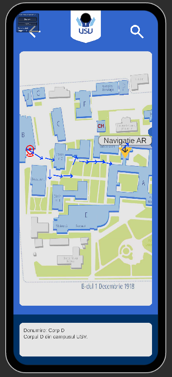
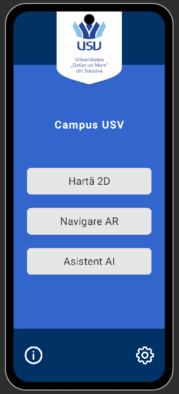
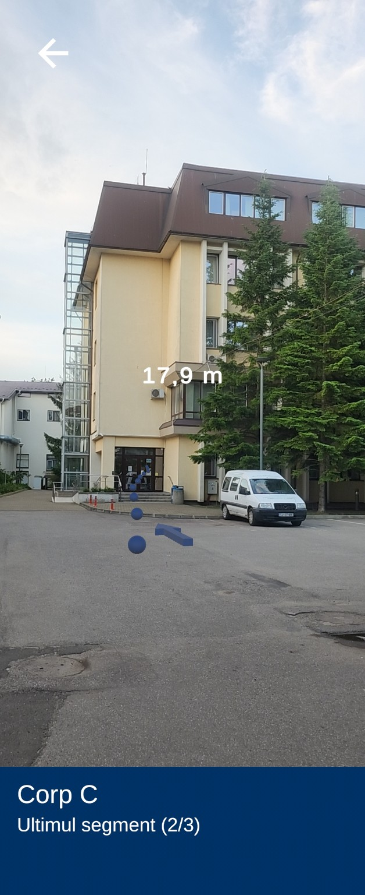

Campus USV
Navigare prin campus, de la hartă 2D la ghidare în realitate augmentată.
Aplicație Android dezvoltată în Unity și C#, cu rutare locală prin Dijkstra, filtrarea datelor GPS și de orientare, ghidare AR, detectarea sosirii și asistent conversațional contextual.
- Rutare deterministă și verificabilă, disponibilă local
- Hartă interactivă, rute accesibile și interfață RO/EN
- Testare practică pe dispozitive Android în campus


